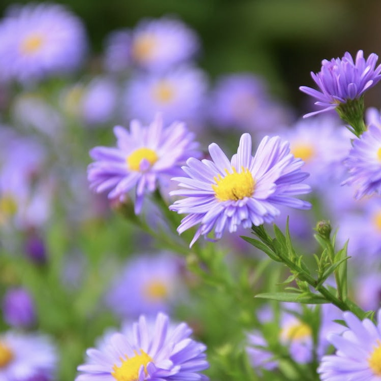
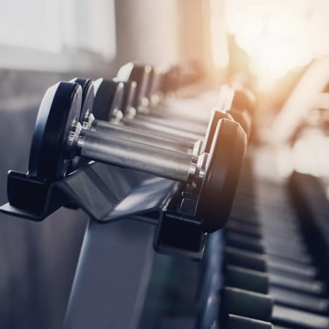
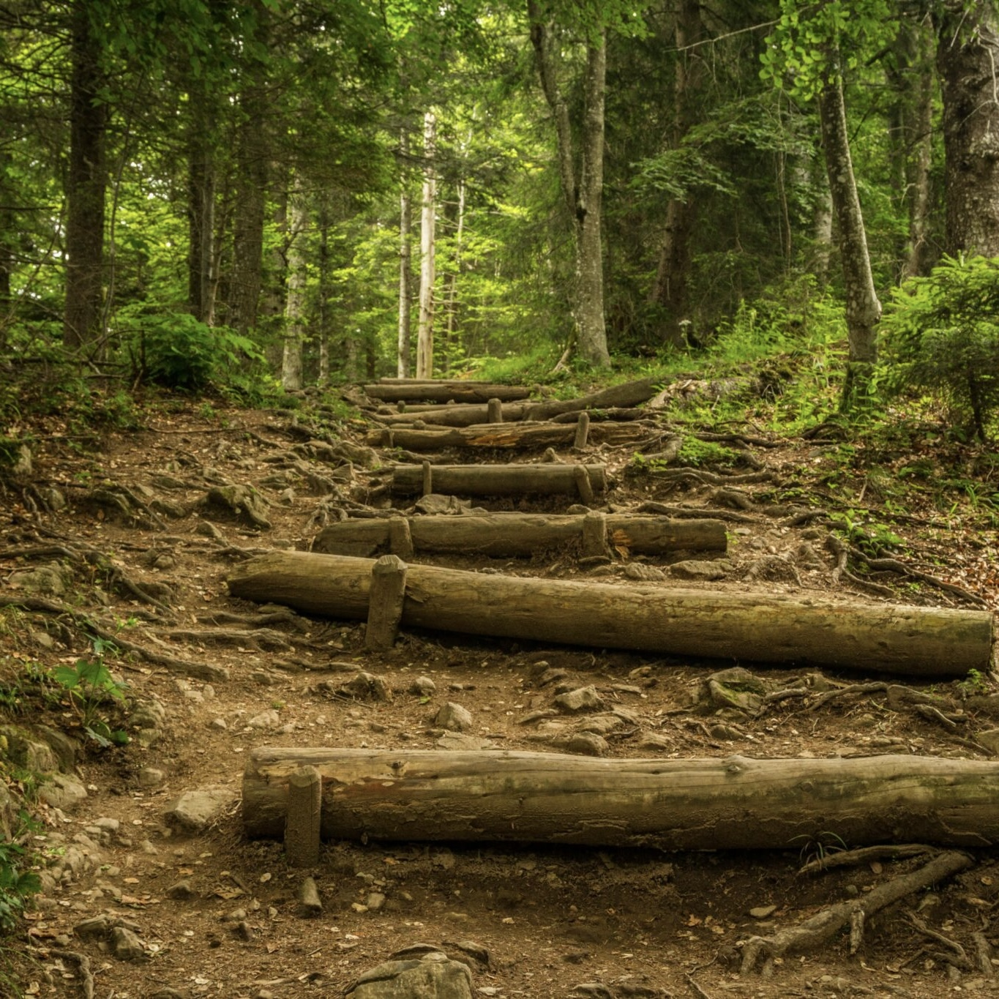

Lifestyle
Study Tip of the Day

Break larger tasks into smaller ones, and take breaks often. During breaks, get up and stretch, take a short walk, get a snack or water, etc.
Academic Resources:
Mind
When you're feeling stressed, try using relaxation exercises like deep breathing, muscle relaxation, and visualizing relaxing places.
Mental Health Apps and Managing Stress:
Body
Exercising doesn't just mean going to the gym, try taking a walk or biking around campus!
Physical Health Resources:
Social Life
Connecting with others socially is important for both your physical and mental well-being. Find a club or organization to join!
List of upcoming events related to self-care and clubs/organizations:
Resources
List of mental health resources:
- UCSC CAPS Website (Counseling and Psychological Services)
- UCSC CARE Website (Campus Advocacy Resources and Education)
- Let's Talk Drop-In Program
- CAPS Self-Help Library
List of physical health resources: